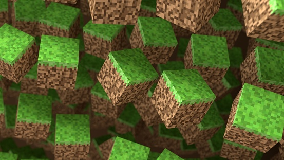
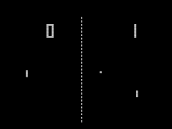
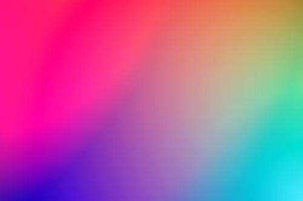

My project site
Hi,my name is Obed-Edom.
This is where I show case my projects and provide links to them.
Last year, I span up a jupyter nootebook session and began mixing colors.Little did I know that it would open me up to a whole new dimension.
What we see today, each tell a story about my curiosity:a curiosity that represents a peace of myself

In this project,I created a mini minecraft world with dimensions of 32 by 32.It currently lacks the vibrancy of the actual game but I hope to improve on it.
You can jump,build, and run around in the game.

Mini-pong was one of the games that taught me to appreciate game developers.However, I enjoyed the creation process.
The best part was when I got to see my brother playing it.
Mixing colors in Jupyter notebook

Mixing colors was one of my first deep dives into jupyter notebook. I wanted to extend my knowledge about plot libraries to use for visualizing math conceepts.
To my surprise, I ended up creating games and mixing colors for fun.
Weather prediction in Jupyter notebook
The first thing we see outside when we look up is the sky.In this project,
I tried using a combination of matrices and python to predict the weather based on dummy variables.
The project was created in jupyter notebooks and is available on my GitHub page.It was quite
intriguing that the characteristics of today's weather can serve as a precessor for tommorrow's